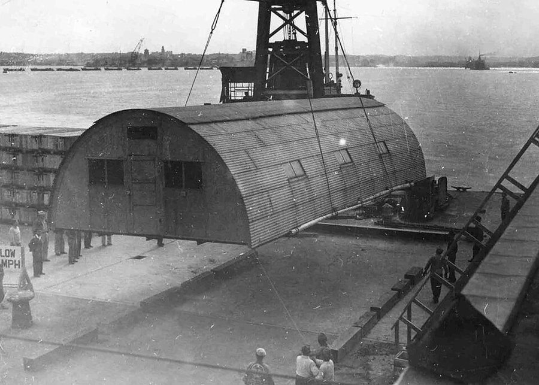
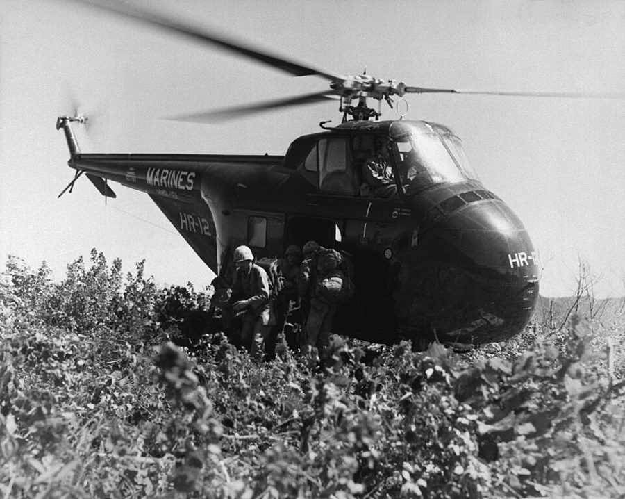
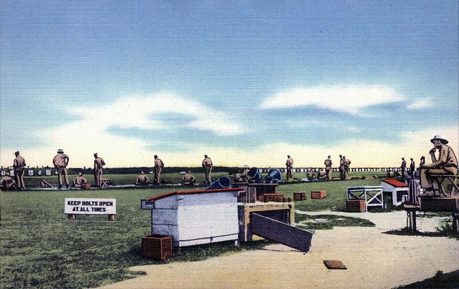
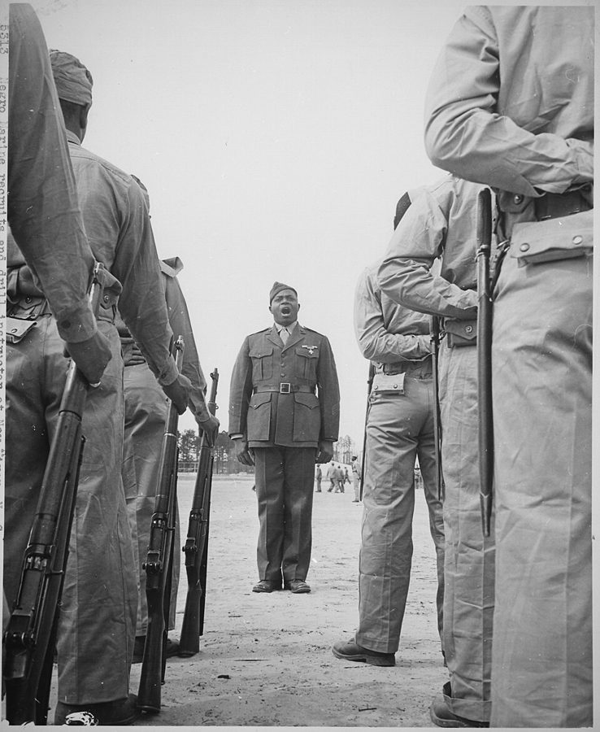

这一章在做什么
二十一岁。上一章末尾等的那张征兵通知到了：1951 年 10 月他去曼哈顿报到，当场被划进海军陆战队。这一页是头半年：南卡罗来纳的新兵营两个月，佛罗里达的海军摄影学校三个月。
军营里的事他都当笑话讲。留心笑话外面的两样东西：朝鲜的战场一直在画面外，南方的隔离就在营门外。
纽约 · 曼哈顿
1951.10.30 报到
帕里斯岛（南卡）
新兵营，两个月
纽约
短假
Sergeant Lennon 和别的 D.I.
勒琼营（北卡）
中转连，几个星期
亚特兰大
换火车
彭萨科拉（佛州）
摄影学校，1952.2 起约三个月
带队的是 Como
Gordon、Pachucki、Chief
毕业后分回勒琼营（下一页）
本站示意图。书里只给了两个日期：1951 年 10 月 30 日报到，1952 年 2 月摄影班开课。其余是按「两个月」「几个星期」「约三个月」排的。
出场的人
这一页的人几乎都只有军衔加一个姓，有的连姓也没有。听书时靠军衔认人，所以先把军衔和人对上。
the Army sergeant 第 1 节，没有名字 征兵站里发文件的陆军中士，说话带刺。作者是从他手里接过「USMC」的。
the Marine captain 第 1 节，没有名字 陆战队的上尉，出来只说了一句话就走。
Drill Instructor D.I.，好几个 新兵营的教官。书里说他们都严，其中一个是 nasty（存心刁难），没有给名字。
Sergeant Lennon /ˈlenən/ 教官之一，刚从朝鲜战场回来，话少，人正派。
哈莱姆来的同排战友 没有名字 也爱摄影，有一台装 Voigtländer 镜头的旧相机。作者用镜头来称呼他。
Como /ˈkoʊmoʊ/，男，白人 纽约人，和大家同级，凭将军的一封信带队去彭萨科拉。
Sergeant Gordon 陆战队中士 彭萨科拉营房里的中士，爱说笑，人人喜欢。
Sergeant Pachucki 陆战队中士，外号 little Caesar 同一个营房里的另一位中士，管得严，说话冷，没人喜欢。和 Gordon 是一对，要成对记。
the Chief Chief Petty Officer，海军 摄影学校里管学员外出登记的海军军士长。
Commander Simonsen 和 the colonel 一个海军，一个陆战队 前者是摄影学校的校长，和气的老先生；后者是陆战队营房的主官，上校，厉害得多。
Chief、Commander、captain 都是军衔。 Chief 不是「头儿」，是当时海军士兵里最高的一级；Commander 不是泛指指挥官，是海军中校；第 1 节的 captain 是陆战队上尉，不是船长。
学校归海军管，营房归陆战队管，所以第 9 节里同一件事有两套上级，见下面的军衔图。
几个地名的读音。 Parris Island 两个 r，读 /ˈpærɪs/，和巴黎的英文同音，不是巴黎。Pensacola /ˌpensəˈkoʊlə/。Camp Lejeune 有 /ləˈʒuːn/ 和 /ləˈʒɜːrn/ 两种读法：前一种最常听到，后一种是将军家里人和陆战队官方的读法。听到哪一种都是它。
背景：作者默认你知道的事
章名是一首歌
海军陆战队军歌（Marines’ Hymn）的第一句：From the Halls of Montezuma to the shores of Tripoli 。Montezuma 是阿兹特克皇帝的名字，这里指 1847 年美墨战争中陆战队打进墨西哥城；Tripoli 指 1805 年在北非的一仗。
这首歌在第 3 节里出场两次：先是教官不许新兵唱，说他们还没挣到这个资格；后来又命令他们在一个特别的地方连唱三遍。

那个「特别的地方」是一座 Quonset hut：波纹钢板弯成半个圆筒的预制营房，二战时美军到处都用。这一座 1947–48 年摄于日本，正被整个吊走另作他用。美国陆军工程兵团，公有领域，维基共享资源 朝鲜战争和征兵

1951 年 9 月，朝鲜的 812 高地，陆战队第一师的士兵从直升机上下来换防。一个多月后作者在曼哈顿报到。T. G. Donegan（美国海军），公有领域，维基共享资源 朝鲜战争 1950 年 6 月爆发，同年秋天中国军队参战，战线在三八线一带僵住。停战谈判 1951 年 7 月开始，拖到 1953 年 7 月才签字。作者当兵的两年正好落在这段「边谈边打」里。
美国当时实行征兵制，管这件事的机构叫 Selective Service，各地有征兵委员会（draft board）。被征来的叫 draftee，服役两年；自己报名的叫 volunteer。
陆战队向来以全是志愿兵自傲，按书里的说法，那天上午它也从征来的人里每四个划走一个。draftee 和 volunteer 的区别，这一章会一再用到。
帕里斯岛和 Drill Instructor

帕里斯岛的步枪靶场，1946 年的明信片。岛上地势就是这样又平又空。每个新兵都要在岛上打靶记成绩。Tichnor Brothers，公有领域，维基共享资源 Parris Island 在南卡罗来纳州海边，是陆战队在东部的新兵训练基地。新兵营叫 boot camp，新兵按 platoon（排）编组，每排交给几个 Drill Instructor，简称 D.I.，多是中士。
D.I. 从早到晚吼人、骂人、罚人，是这套训练的一部分，书里把目的说得很直白。陆军的新兵在离纽约不远的 Fort Dix 受训，周末还能请假。
军衔：谁能管谁
陆战队士兵，下低上高
Master Sergeant
Technical Sergeant
Staff Sergeant 上士
Sergeant 中士
Corporal 下士
Private First Class 一等兵
Private 列兵
色块：士官（non-commissioned officers）
Corporal 以上才算，可以管人
Lennon、Gordon、 Pachucki
作者、Como 和摄影班同学
军官
Colonel 上校 陆战队营房的主官
Captain 上尉 第 1 节只说一句话的那位
海军（摄影学校归它管）
Commander 海军中校 校长 Simonsen
Chief Petty Officer 当时海军士兵最高一级
本站示意图。士兵的七级是 1951 年前后的叫法，后来改过。Sergeant 泛称时也指上面几级，书里见到谁都叫 Sergeant。军官只画了这一页出场的。
美军分士兵（enlisted）和军官（officer）两条梯子，互不相通。新兵营出来是 Private First Class，简写 Pfc.，袖子上一道杠。军官再年轻，军衔也压过所有士兵。
军队里取消了隔离，营门外没有

约 1943 年 4 月，教官 Gilbert Johnson 中士在训练黑人新兵。那时黑人陆战队员单独编队、单独受训。八年后作者进新兵营时，已经是黑人白人同一个排。作者不详，美国国家档案馆，公有领域，维基共享资源 1948 年 7 月，杜鲁门总统签署第 9981 号行政命令，要求军队里不分种族一律平等对待。各军种执行有快有慢，到朝鲜战争期间，黑人和白人已经编在同一个排里受训。
但这道命令管不到营门外。南方各州的隔离法（见第 1 章）还在：餐馆、候车室、火车车厢照旧分开。第 2 节和第 6 节要放在一起读。
彭萨科拉，和第 9 节的两套上级
Pensacola 在佛罗里达州最西头，靠墨西哥湾。这里的海军航空站（Naval Air Station）1914 年设立，是美国海军训练飞行员的老基地。陆战队在编制上属于海军部，书里他们上的是海军的摄影学校，和水兵（sailors）同班。
摄影学校（海军）
陆战队营房
Commander Simonsen
校长。按常规由他开庭
Chief Petty Officer
管外出登记
the colonel
营房主官。这一次送到他这里
Gordon
和气
Pachucki
冷，上校倚重
常规的路
这一次的路
两位中士常驻营房，学员天天见
本站示意图。第 9 节里作者正是从「没走常规的路」这一点起了疑心。两位中士各自做了什么，读了就知道。
军事法庭（court-martial）分三等，最轻的一等叫 summary court-martial，由一名军官一个人审，不设陪审。A.W.O.L. 是 absent without leave，擅自离队。
留个记号：后面还会回来
这一页有三处作者自己点明「这只是开头」或「这一课我一直记着」，另有一条从上一章接过来的线。
和陆战队斗智 第 2 节 帐篷门帘和水桶那件事，他说是一场长期较量的开头。这一章剩下的两页大半是这条线。
先顾退伍以后 第 8 节 他说短期的军务和长远的平民生计冲突时，一律让后者赢，并点了 G.I. Bill 的名。它在第 5 章派上用场。
人人的朋友 第 9 节 他说这件事教给他一条关于人的、长久有用的道理。本站的看法：后面他怎样判断同事和上司，可以拿这一条去对。
相机 承接第 3 章第 13 节 上一章末尾他刚攒钱买了像样的相机，学会自己冲胶卷。到这一页，表格上「爱好」一栏里的一个词决定了他去哪里。
词与短语
词条按书里出现的顺序排，小标题是原书用 • • • 隔开的各节。斜体小字是那句话里的几个词，在 Kindle 里搜它就能跳到那一句。单个的生词长按就能查，这里收的主要是词典帮不上忙的。
第 1 节 · 每四份盖一个章
induction
… downtown Manhattan for induction into the …
入伍手续
不是归纳法，也不是电磁感应。induct = 正式接收入伍；被接收的人叫 inductee，下文就有。
draftee
… bureaucratic preliminaries, we draftees found ourselves …
被征来的兵
draft = 征兵。和 volunteer（志愿兵）相对，是这一章的关键词。
military bearing
… had a professional military bearing, but …
军人的仪态
bearing = 站相、举止，和轴承、方位无关。第 9 节的 military carriage 是同一个意思。
USMC
… has been stamped ‘USMC.’ Now, …
美国海军陆战队
United States Marine Corps，四个字母一个个念。Corps 读 /kɔːr/，p 和 s 都不发音。
boot camp
… months in Marine Corps boot camp, …
新兵营
boot 是海军和陆战队对新兵的俗称。现在健身班、编程速成班也叫 boot camp，是从这里借的。
two solid months
… would spend two solid months in …
整整两个月
solid 修饰时间 = 不间断的。
without a let-up
… camp, without a let-up. This news …
一口气不让喘
let up = 松劲、缓一缓。前面的 weekend pass 是周末外出许可。
put a damper on
… seemed to put a damper on …
给……泼了冷水
damper 是炉子的风门，关上火就小了。整句是往轻里说：屋里一下子没人说笑了。
get under way
… induction process got under way with …
开始了
原是航海用语，船起锚开动。
just the kind of man they are looking for
… just the kind of man they …
你正是他们要的那种人
中士的玩笑：作者上前时刚把一把折叠椅撞飞。they 指陆战队。
turn on his heel
… Then he turned on his heel …
一转身（就走）
话说完不等回应，掉头就走。第 9 节末尾有人做了一模一样的动作，作者用了同一句。
第 2 节 · 新兵营
at a high decibel level
… at a high decibel level. Among …
吼着说
用物理名词说「吼」，往轻里说。前半句的 in no uncertain terms 第 1 章见过：毫不含糊地。
bark out
… other arbitrary edicts were barked out …
吼着下达
bark 是狗叫。edict 本是皇帝的敕令，拿来说营规，带挖苦。
Drill Instructor
… gear, with Drill Instructors yelling and …
新兵教官
drill 是队列操练。简称 D.I.，下文说只敢背着他们这么叫。
chew out
… expect to be chewed out for …
臭骂一顿
军队口语，上级训下级。
crack
… we would crack under incessant pressure. …
垮掉，精神崩溃
下一段的 crack up 同义。这是教官自己说的训练目的。
race, color, creed, or national origin
… race, color, creed, or national origin. …
不分种族、肤色、信仰、原籍
反歧视的法律和公文里的套话。拿它来说「折磨人一视同仁」，是冷幽默。creed = 宗教信仰。
platoon
… the guys in our platoon had …
排
读 /pləˈtuːn/。新兵营里一个排就是一个班级，他这个排七十人左右，番号 548。
go berserk
… those who suddenly went berserk, or …
突然发狂
读 /bərˈzɜːrk/。
pass out
… so many grown men pass out …
晕倒
不是分发，也不是去世（pass away）。
out of earshot
… (called that only out of earshot) …
在他听不见的地方
earshot = 听力所及的范围。第 9 节说 Pachucki 的外号时又用了一次。
Ten-HUT
… would yell “Ten-HUT!” then “Right FACE!” …
立正！
Attention 喊出来的样子。口令分预令和动令，大写的是喊得最响的动令。Right FACE 向右转，Forward MARCH 齐步走。
boondocks
… out into the boondocks for the …
荒郊野外
美军从菲律宾带回来的词，他加禄语 bundok 是山。这一章后面还会出现好几次。
get to me
… What most got to me was …
最让我受不了的
get to 某人 = 把他磨得难受，不是「到达」。
few and far between
… sleep were few and far between, …
少之又少
at attention
… on my feet at attention when …
立正站着
attention 这里是立正的姿势，不是注意力。
battle of wits
… a long battle of wits between …
斗智
见上面「留个记号」。
the sack
… I crawled into the sack exhausted, …
床铺
军队口语，sack = 床。下一页有 sacked out （睡着了）。
the luck of the draw
… was the luck of the draw …
抽签抽到什么算什么
draw = 抽签。说的是摊上哪个教官全凭运气。
fraternity initiates
… therefore, like fraternity initiates, more likely …
刚入兄弟会的新人
美国大学的男生社团（fraternity）入会要先受老会员一番捉弄折磨。自己要进来的人更能忍，他拿这个比志愿兵。
write to their Congressmen
… or writing to their Congressmen. …
给自己选区的国会议员写信
美国选民告状的常用办法。议员一过问，军方就得答复，所以教官有顾忌。
not … by any means
… not treated gently, by any means. …
绝对算不上（客气）
「没有被温柔对待」要反着读。by any means 在否定句里 = 一点也不。
call the roll
… slowly calling the roll. There were …
点名
roll = 名册。名词是 roll call ，第 8、9 节都有。
not about to
… he was not about to be …
才不肯
be about to 是即将；否定的 not about to 是口语：决不打算。第 9 节还有一次。
philosophize
… he proceeded to philosophize on this …
借题发挥，慢慢议论
说反话。教官穿得暖和，新兵光着脚站在十二月的夜里，他故意拖时间。
第 3 节 · Elliot’s Beach
hang over our heads
… uncertainties hanging over our heads was …
悬在我们头上
一件迟早要来、让人不安的事。Elliot’s Beach 是岛上的野外训练场。
livid
… was in our midst, livid. …
气得脸色发青
下一页还会用到这个词。
on that cheerful note
… On that cheerful note, I rejoined …
带着这句「吉利话」
note = 调子。反话：他刚听见医生说那个头缠绷带的人是从哪儿回来的，另一个医生只答了一句「哦，那就难怪了」。
on the heels of
… was on the heels of the …
紧跟在……脚后
step for step
… Instructor, matching him step for step. …
他迈一步我跟一步
A for A 的句式：一个对一个，不落下。
not all that hard
… was not all that hard but, …
没那么难
not all that + 形容词 = 并不怎么。
didn’t make it
… but, if you didn’t make it, …
没跳过去
make it = 办成、赶上、撑过来，具体意思看上文。这里是没越过那道沟。
issue
… We were all issued gas masks …
发给
issue 作动词是配发，军队里的东西都是 issued 的。接下来两句是这一节的笑点：发了，教了，然后不许用。
Quonset hut
… into a huge Quonset hut, which …
半圆筒形的铁皮活动房
读 /ˈkwɑːnsɪt/。二战时美军大量使用的预制营房，波纹钢板弯成半个圆筒，以罗得岛州的 Quonset Point 得名。
you never saw a prouder
… you never saw a prouder bunch …
再没有比这更得意的一群人了
否定加比较级 = 最高级。这句不是反话，是这一节唯一当真的一句。
第 4 节 · Sergeant Lennon
Browning Automatic Rifle
… been a Browning Automatic Rifle man …
勃朗宁自动步枪
简称 B.A.R.，一个个字母念。步兵班里的自动火力，敌人最先要打掉的就是它，所以拿这支枪的人伤亡高。
beat the odds
… why he beat the odds and …
在不利的概率下活了下来
odds = 胜算、概率。
zero in on
… trying to zero in on him, …
把炮火校准到他身上
本义是给枪炮归零校准，引申为瞄准、锁定。这里用的是本义。
mess hall
… alone in the mess hall staring …
食堂
mess 在军队里是集体伙食，和「乱」无关。这一句里原书把 far away 印成了 far way。
第 5 节 · 测验和爱好一栏
mental tests
… we all took mental tests. When …
智力和能力测验
不是查精神病。军队用它给新兵分配兵种。
camera bug
… Harlem, was a camera bug too. …
相机迷
bug = 对某事着迷的人。
Voigtländer
… camera with a Voigtländer lens (I …
福伦达，德国的老牌镜头和相机厂
德语里 V 读 f，oi 读长音 o。英语朗读多半读成 /ˈvɔɪtlændər/。film-pack camera 是用盒装散页胶片的老式相机。
“going to do it”
… was always “going to do it”—but …
总说「这就去办」
引号是作者加的：光说不做。
infantry duty
… to be assigned infantry duty was …
当步兵
读 /ˈɪnfəntri/。在 1952 年就是去朝鲜前线。
第 6 节 · 亚特兰大换车
leave
… After a brief leave in New …
假期
名词，军人的准假。A.W.O.L. 里的 L 就是它。
casual company
… stay in a “casual company” of …
中转连
不是「随意的陪伴」。casual 在军语里指暂时没有编制、等着分配的人；company 是连。
Private First Class
… Como, a Private First Class like …
一等兵
简写 Pfc.。带队的和被带的同级，是这一节别扭的来源。
the first leg of the journey
… For the first leg of the …
头一段路
leg = 行程中的一段。
I’m in charge here
… “I’m in charge here, Sowell,” he …
这儿我说了算
作者答的 Aye, aye 是海军和陆战队接受命令时的标准回答，aye 读 /aɪ/。对一个同级的人这么答，是挖苦。
what the devil
… know what the devil was going …
到底怎么回事
the devil 只是加强语气，比 the hell 文雅一点。
detail
… in charge of the detail said, …
（派来办这件事的）一小队人
不是细节。军警用语：临时派出执行任务的小队。
turn loose
… They turned me loose. …
松开手
一边一个人拽着他的胳膊，他说了一句「别这么解决」。
have no stomach for
… of us had any stomach for …
没有胃口，也没有心思
双关：字面是吃不下，习语是「没那个心情」。
a separate car
… to ride in a separate car. …
另一节车厢
car 是火车车厢。南方的火车上黑人有专门的车厢。
would not hear of it
… Como would not hear of it. …
说什么也不答应
不是「没听说过」。
第 7 节 · 彭萨科拉
brig
… the gate, at the brig, and …
禁闭室
海军和陆战队对军中监牢的叫法，原指船上的禁闭舱。第 4 章后面还会出现。
camaraderie
… A real camaraderie developed among the …
伙伴之间的情谊
读 /ˌkɑːməˈrɑːdəri/，听书时不容易和拼写对上。
developers
… cameras, lenses, films, and developers. …
显影液
不是开发者。develop 胶卷 = 冲洗显影，下一页还会用到。
come home
… reality outside came home one day …
一下子变得真切
不是回家。come home (to 某人) = 让人切身感到。
第 8 节 · 十个记过
discharge day
… looking forward to my discharge day …
退伍那天
discharge = 解除兵役。同一句里的 deliverance 是「得救」，带宗教味道，用得很重。
G.I. Bill
… as the G.I. Bill for college, …
退伍军人权利法案
1944 年的法律，政府出钱供退伍军人上大学；朝鲜战争的退伍军人 1952 年起也有同类待遇。G.I. 是美国兵的俗称。bill = 法案。
resolved in favor of
… were resolved in favor of my …
一律判给（后者）赢
法律腔。意思是两头冲突时，他总挑对退伍以后有用的那头。
So nice to have you with us
… “So nice to have you with us,” …
您肯来真是太好了
反话，后面的 acidly（尖酸地）已经点明。前一句中士问 “Where?” 是因为太久没听见有人应这个名字。
take the rules casually
… take the rules much more casually …
不大把规矩当回事
往轻里说。
demerits
… that sailors received demerits but that …
记过，扣分
军校和军训单位里违纪记一笔。注意这一段最后两个数字。
第 9 节 · 两位中士
military carriage
… athletic build, a military carriage, and …
军人的身姿
carriage = 身体的姿态，不是马车。build 是体格。
little Caesar
… out of earshot—as “little Caesar.” It …
「小恺撒」
Caesar 读 /ˈsiːzər/。Little Caesar 也是 1931 年一部黑帮片的片名，主角是个矮个子的狠角色。
hands down
… all preferred Sergeant Gordon, hands down. …
毫无悬念地
赛马用语：骑师稳赢，手都放下了。
Railway Express Agency
… at the Railway Express Agency in …
铁路快运公司
当年全美通行的包裹快递，靠铁路运，到站自取。邮购的东西常走它。
Chief Petty Officer
… approached the Chief Petty Officer in …
海军军士长
petty officer 是海军的士官，petty 读 /ˈpeti/。当面叫 Chief。
dungarees
… to change from my dungarees into …
工作服
读 /ˌdʌŋɡəˈriːz/。粗布的日常作业服。进城必须换 dress uniform（外出穿的正式制服），所以他得先回营房。
A.W.O.L.
… charged with being A.W.O.L. (absent without …
擅自离队
常读成一个词 /ˈeɪwɔːl/。下一页还有。
summary court-martial
… that a summary court-martial was being …
简易军事法庭
summary 作形容词是「从简、即决」，不是摘要。martial 和 marshal 同音。
an honest mistake
… not all be an honest mistake, …
无心之失
honest 这里是「并非故意」。
not universally popular
… that I was not universally popular …
不是人人都喜欢我
要反着读，而且作者自己紧接着说了：这么讲是大大地往轻里说。understate 就是这种写法的名字。
wiseguy
… kind of wiseguy draftee they didn’t …
自作聪明、爱顶嘴的家伙
不是聪明人，是贬义。
the wrong color on top of that
… the wrong color on top of …
再加上肤色也不对
on top of that = 此外还。他讲种族常常就是这样半句话带过。
make an example of
… time to make an example of …
拿……开刀，杀一儆百
a tougher customer
… barracks, a much tougher customer. …
难对付得多的角色
customer 口语里 = 家伙，不是顾客。
take your punishment like a man
… to take your punishment like a …
像个男子汉一样认罚
听着是鼓励，其实是「别指望我」。和第 2 节「进去之前最好已经是个男人」对着看。
stick his neck out
… going to stick his neck out …
出头冒险
伸脖子等着挨刀。
cross
… by crossing the Chief Petty Officer. …
得罪，跟……对着干
cross 作动词接人。
denouement
… The denouement was as unexpected as …
结局
法语词，读 /ˌdeɪnuːˈmɑːn/，t 不发音，听书时很难认出来。
come forward
… Unasked, Pachucki came forward. When …
主动站出来（作证）
不是往前走。Unasked = 没人去求他。
put in an appearance
… Pachucki put in an appearance at …
特地露了一面
专程来一趟，待的时间不长。
第 10 节 · 按名次挑去处
class standing
… order of their class standing at …
班上的名次
standing = 排名、地位。
at the eleventh hour
… this year at the eleventh hour …
在最后关头
出自《圣经》里葡萄园雇工的比喻，和十一点钟无关。
Marines Pacific
… three were mysteriously labeled “Marines Pacific.” …
「太平洋陆战队」
去哪儿由太平洋地区的司令临时定。下一句的 Aleutian /əˈluːʃn/ islands 是阿拉斯加伸向亚洲的阿留申群岛，又冷又荒。
God-forsaken
… some other equally God-forsaken place. …
鸟不拉屎的
字面：连上帝都抛弃了的。下一页他拿同一个词说勒琼营。
the most desirable of a bad lot
… the most desirable of a bad …
一堆烂选择里最不坏的
lot = 一批。
turn out to be
… This assignment turned out to be …
结果竟是
全节的包袱在这半句后面，别听漏。
值得停下来的句子
Never in my life did race mean less than during those two months at Parris Island.— 第 2 节。本站译：我这辈子，种族从来没有像在帕里斯岛那两个月里那样无关紧要。
否定词 Never 提到句首，后面倒装成 did race mean ；mean less 是「分量更轻」。这句话紧接着的解释是玩笑：教官让所有人一样难受。但句子本身是当真的。
四节之后，同一身军装到了亚特兰大的车站餐厅。作者没有把这两处连起来评论，读的人可以自己连。
… other people who are everybody’s friend—which usually means that they are nobody’s friend.— 第 9 节，Sergeant Gordon 答复他之后。本站译：……那些跟谁都是朋友的人，这通常就是说，他们跟谁也不是朋友。
破折号后面的 which 指前面整件事：「跟谁都是朋友」这个状态。这是全页少有的一句不带玩笑的结论，作者说它 painful but valuable。
它也在解释这一节人物的写法：先让你喜欢一个、讨厌一个，再让你看谁肯为一句实话担风险。
检查一下理解
先在心里答，再点开。答错的那题，回书里把那一节再读（或再听）一遍。
1. 作者是自己选择进海军陆战队的吗？ 不是。他是被征兵的，本来该进陆军；那天上午每四份文件里有一份盖了 USMC，他的恰好是。他在第 8 节还专门说了一句：当兵不是他选的，陆战队更不是。
2. 教官为什么不许新兵唱军歌？后来唱的时候，发下来的防毒面具用上了吗？ 教官说他们还没挣到唱的资格，要过了 Elliot’s Beach 才行。面具没用上：命令就是在放了催泪瓦斯的铁皮房里不戴面具唱完。全排没有一个人戴，这是全页少见的一处不带讽刺的骄傲。
3. 他为什么说 548 排比别的排少挨一些整？是教官心软吗？ 他给了两个原因：摊上哪个教官有运气成分；更要紧的是这个排多是纽约征来的兵，受了过分的对待会去告状、给议员写信。南方的排多是志愿兵，更能忍。这是用「谁会抱怨」来解释，不是用教官的好坏。
4. 亚特兰大的警察是个凶恶的角色吗？ 书里写的不是。那位年长的警察不肯让步，但明显为这个差事难堪，还提出替三个黑人陆战队员另找吃饭的地方。真正让作者觉得荒唐的是 Como：他不是坏心，是对南方的规矩一无所知，而且吃了一次亏还不改。
5. 第 9 节里，Gordon 和 Pachucki 谁帮了他？这和前文给人的印象一致吗？ 帮他的是人人都不喜欢的 Pachucki，没人求他，他自己去找了上校。人人喜欢的 Gordon 当时就在那间屋里，却不肯为他说话。作者先铺垫好恶，再把它翻过来，就是为了那句关于「人人的朋友」的话。
6. 毕业挑去处时，名次最好的人挑到了最好的地方吗？ 没有。第一名自愿去了朝鲜；第二到第五名（作者是第五）拿了看上去最稳妥的勒琼营；最后三名没得挑，只剩一个听着吓人的去处，结果是住在旧金山的旅馆里。按名次挑，挑的人却不知道哪个才是好的。